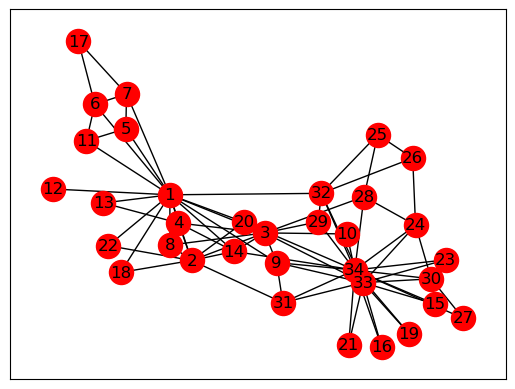
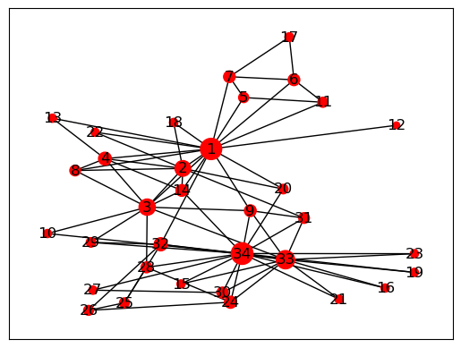
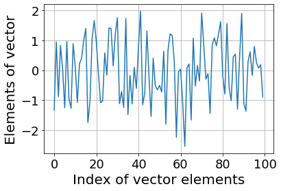

from IPython.display import YouTubeVideo
YouTubeVideo("VcCcMZo6J6w")Краткий обзор предыдущей лекции
- Линейные системы
- Метод Гаусса
- LU-разложение
- Число обусловленности как мера прямой устойчивости задачи
Сегодняшняя лекция
Сегодня мы поговорим о: - Собственных векторах и их приложениях (PageRank) - Вычислении собственных векторов методом степенной итерации - Теореме Шура - Нормальных матрицах
Что такое собственный вектор?
- Определение. Вектор x \ne 0 называется собственным вектором квадратной матрицы A, если существует число \lambda такое, что
Ax = \lambda x.
Число \lambda называется собственным значением. Также используется термин собственная пара.
Поскольку A - \lambda I должна иметь нетривиальное ядро, собственные значения являются корнями характеристического многочлена
\det (A - \lambda I) = 0.
Разложение по собственным значениям
Если матрица A размера n\times n имеет n собственных векторов s_i, i=1,\dots,n:
As_i = \lambda_i s_i,
то это можно записать как
A S = S \Lambda, \quad\text{где}\quad S=(s_1,\dots,s_n), \quad \Lambda = \text{diag}(\lambda_1, \dots, \lambda_n),
или эквивалентно
A = S\Lambda S^{-1}. Это называется собственное разложение (eigendecomposition) матрицы. Матрицы, которые могут быть представлены через разложение по собственным значениям, называются диагонализируемыми.
Существование
Какие классы матриц диагонализируемы?
Простой пример - это матрицы с различными собственными значениями.
В более общем случае, матрица диагонализируема тогда и только тогда, когда алгебраическая кратность каждого собственного значения (кратность собственного значения в характеристическом многочлене) равна его геометрической кратности (размерности собственного подпространства).
Для наших целей наиболее важным классом диагонализируемых матриц является класс нормальных матриц:
AA^* = A^* A.
- Вы узнаете, как доказать, что нормальные матрицы диагонализируемы, через несколько слайдов (тема разложения Шура).
Пример
- Вы можете просто проверить, что, например, матрица
A = \begin{pmatrix} 1 & 1 \\ 0 & 1 \end{pmatrix}
имеет одно собственное значение 1 кратности 2 (так как её характеристический многочлен равен p(\lambda)=(1-\lambda)^2), но только один собственный вектор \begin{pmatrix} c \\ 0 \end{pmatrix}, и, следовательно, матрица не диагонализируема.
Почему собственные векторы и собственные значения важны?
- Собственные векторы являются как важными вспомогательными инструментами, так и играют важную роль в приложениях.
Можете привести несколько примеров?
Применения собственных значений/собственных векторов
- Теория коммуникаций: теоретический предел количества передаваемой информации
- Проектирование мостов (машиностроение)
- Проектирование hi-fi аудиосистем
- Квантовая химия: весь наш микромир управляется уравнением Шрёдингера, которое является задачей на собственные значения:
H \psi = E \psi,
- Редукция порядка моделей сложных систем
- Анализ графов (PageRank, кластеризация графов)
Eigenvalues are vibrational frequencies
A typical computation of eigenvectors / eigenvectors is for studying
- Vibrational computations of mechanical structures
- Model order reduction of complex systems
Google PageRank
- Одним из самых известных вычислений собственных векторов является Google PageRank.
- В настоящее время он активно не используется Google, но был одной из основных особенностей на ранних этапах. Вопрос в том, как мы ранжируем веб-страницы, какая из них важна, а какая нет.
- Всё, что мы знаем о сети, это какая страница ссылается на какую. PageRank определяется рекурсивным определением.
- Обозначим через p_i важность i-й страницы.
- Затем мы определяем эту важность как среднее значение всех важностей всех страниц, которые ссылаются на текущую страницу. Это даёт нам линейную систему
p_i = \sum_{j \in N(i)} \frac{p_j}{L(j)},
где L(j) - количество исходящих ссылок на j-й странице, N(i) - все соседи i-й страницы. Это можно переписать как
p = G p, \quad G_{ij} = \frac{1}{L(j)}
или как задачу на собственные значения
Gp = 1 p,
т.е. собственное значение 1 уже известно. Заметим, что G является левой стохастической матрицей, т.е. сумма элементов в каждом её столбце равна 1. Проверьте, что любая левая стохастическая матрица имеет максимальное собственное значение, равное 1.
Демонстрация
Мы можем вычислить PageRank, используя некоторые пакеты Python.
Мы будем использовать пакет
networkxдля работы с графами, который можно установить с помощьюМы будем использовать простой пример сети карате-клуба Захари.
Эти данные были собраны вручную в 1977 году и представляют собой классический набор данных социальной сети.
import numpy as np
%matplotlib inline
import matplotlib.pyplot as plt
import networkx as nx
kn = nx.read_gml('karate.gml')
#nx.write_gml(kn, 'karate2.gml')
nx.draw_networkx(kn, node_color="red") #Draw the graph
- Теперь мы можем вычислить PageRank, используя встроенную функцию NetworkX.
- Мы также отображаем размер узлов больше, если их PageRank больше.
pr = nx.algorithms.link_analysis.pagerank(kn)
pr_vector = list(pr.values())
pr_vector = np.array(pr_vector) * 3000
nx.draw_networkx(kn, node_size=pr_vector, node_color="red", labels=None)
Вычисление собственных значений
- Как вычислить собственные значения и собственные векторы?
Существует два типа задач на собственные значения:
- полная задача на собственные значения (требуются все собственные значения и собственные векторы)
- частичные собственные значения (требуются минимальные/максимальные собственные значения, собственные значения в заданной области)
Вычисление собственных значений через характеристические уравнения
Задача на собственные значения имеет вид
Ax = \lambda x,
или
(A - \lambda I) x = 0,
следовательно, матрица A - \lambda I имеет нетривиальное ядро и должна быть сингулярной.
Это означает, что определитель
p(\lambda) = \det(A - \lambda I) = 0.
- Это уравнение называется характеристическим уравнением и является многочленом порядка n.
- Многочлен степени n имеет n комплексных корней!
Вспомним определение определителя
Определитель квадратной матрицы A определяется как
\det A = \sum_{\sigma \in S_n} \mathrm{sgn}({\sigma})\prod^n_{i=1} a_{i, \sigma_i},
где - S_n - множество всех перестановок чисел 1, \ldots, n - \mathrm{sgn} - знак перестановки ( (-1)^p, где p - число транспозиций, которые нужно сделать).
Свойства определителя
Определитель имеет много полезных свойств:
1. \det(AB) = \det(A) \det(B)
2. Если одна строка представлена в виде суммы двух векторов, определитель является суммой двух определителей
3. “Разложение по минорам”: мы можем разложить определитель по выбранной строке или столбцу.
Если делать это через разложение по минорам, получаем экспоненциальную сложность по n.
Можем ли мы достичь сложности \mathcal{O}(n^3)?
Собственные значения и характеристическое уравнение
Теперь вернемся к собственным значениям.
Характеристическое уравнение может быть использовано для вычисления собственных значений, что приводит к наивному алгоритму:
p(\lambda) = \det(A - \lambda I)
- Вычислить коэффициенты многочлена
- Вычислить корни
Это хорошая идея?
Поделитесь своим мнением
Мы можем сделать короткую демонстрацию этого
import matplotlib.pyplot as plt
import numpy as np
n = 40
a = [[1.0 / (i - j + 0.5) for i in range(n)] for j in range(n)]
a = np.array(a)
ev = np.linalg.eigvals(a)
# There is a special numpy function for characteristic polynomial
cf = np.poly(a)
ev_roots = np.roots(cf)
# print('Coefficients of the polynomial:', cf)
# print('Polynomial roots:', ev_roots)
plt.scatter(ev_roots.real, ev_roots.imag, marker='x', label='roots')
b = a + 1e-3 * np.random.randn(n, n)
ev_b = np.linalg.eigvals(b)
plt.scatter(ev_b.real, ev_b.imag, marker='o', label='Lapack')
# plt.scatter(ev_roots.real, ev_roots.imag, marker='o', label='Brute force')
plt.legend(loc='best')
plt.xlabel('Real part')
plt.ylabel('Imaginary part')Text(0, 0.5, 'Imaginary part')
Мораль
- Не делайте этого, если у вас нет веской причины.
- Поиск корней многочлена очень плохо обусловлен (может быть намного лучше, но не с мономами \{1,x,x^2,\dots\}!). Обратите внимание, что матрица Грама мономов
h_{ij} = \int_0^1 x^i x^j\, dx = \frac{1}{i+j+1},
является матрицей Гильберта, которая имеет экспоненциальное убывание сингулярных значений. - Таким образом, мономы “почти” линейно зависимы.
Степенной метод
- Нас часто интересует вычисление части спектра, например, наибольших или наименьших собственных значений.
- Также интересно отметить, что для эрмитовых матриц (A = A^*) собственные значения всегда действительны (докажите это!).
- Степенной метод является простейшим методом для вычисления наибольшего по модулю собственного значения.
- Это также наш первый пример итерационного метода и метода Крылова.
Степенной метод
- Задача на собственные значения
Ax = \lambda x, \quad \Vert x \Vert_2 = 1 \ \text{для устойчивости}.
может быть переписана как итерация неподвижной точки. - Эта итерация называется степенным методом и находит наибольшее по модулю собственное значение матрицы A.
Степенной метод имеет вид
x_{k+1} = A x_k, \quad x_{k+1} := \frac{x_{k+1}}{\Vert x_{k+1} \Vert_2}
и
x_{k+1}\to v_1,
где Av_1 = \lambda_1 v_1 и \lambda_1 - наибольшее собственное значение, а v_1 - соответствующий собственный вектор.
- На (k+1)-й итерации приближение к \lambda_1 можно найти как
\lambda^{(k+1)} = (Ax_{k+1}, x_{k+1}),
Заметим, что \lambda^{(k+1)} не требуется для (k+2)-й итерации, но может быть полезно для измерения ошибки на каждой итерации: \|Ax_{k+1} - \lambda^{(k+1)}x_{k+1}\|.
Сходимость является геометрической, но коэффициент сходимости равен q^k, где q = \left|\frac{\lambda_{2}}{\lambda_{1}}\right| < 1, для \lambda_1>\lambda_2\geq\dots\geq \lambda_n и k - номер итерации.
Это означает, что сходимость может быть произвольно малой. Чтобы доказать это, достаточно рассмотреть диагональную матрицу 2 \times 2.
Анализ сходимости для A=A^*
Давайте более точно рассмотрим степенной метод, когда A является эрмитовой матрицей. Через два слайда вы узнаете, что каждая эрмитова матрица диагонализируема. Следовательно, существует ортонормированный базис из собственных векторов v_1,\dots,v_n такой, что Av_i = \lambda_i v_i. Разложим x_0 в сумму v_i с коэффициентами c_i:
x_0 = c_1 v_1 + \dots + c_n v_n.
Поскольку v_i являются собственными векторами, мы имеем
\begin{split} x_1 &= \frac{Ax_0}{\|Ax_0\|} = \frac{c_1 \lambda_1 v_1 + \dots + c_n \lambda_n v_n}{\|c_1 \lambda_1 v_1 + \dots + c_n \lambda_n v_n \|} \\ &\vdots\\ x_k &= \frac{Ax_{k-1}}{\|Ax_{k-1}\|} = \frac{c_1 \lambda_1^k v_1 + \dots + c_n \lambda_n^k v_n}{\|c_1 \lambda_1^k v_1 + \dots + c_n \lambda_n^k v_n \|} \end{split}
Теперь вы видите, что
x_k = \frac{c_1}{|c_1|}\left(\frac{\lambda_1}{|\lambda_1|}\right)^k\frac{ v_1 + \frac{c_2}{c_1}\frac{\lambda_2^k}{\lambda_1^k}v_2 + \dots + \frac{c_n}{c_1}\frac{\lambda_n^k}{\lambda_1^k}v_n}{\left\|v_1 + \frac{c_2}{c_1}\frac{\lambda_2^k}{\lambda_1^k}v_2 + \dots + \frac{c_n}{c_1}\frac{\lambda_n^k}{\lambda_1^k}v_n\right\|},
что сходится к v_1, поскольку \left| \frac{c_1}{|c_1|}\left(\frac{\lambda_1}{|\lambda_1|}\right)^k\right| = 1 и \left(\frac{\lambda_2}{\lambda_1}\right)^k \to 0, если |\lambda_2|<|\lambda_1|.
Что нужно помнить о степенном методе
- Степенной метод дает оценку наибольшего по модулю собственного значения или спектрального радиуса заданной матрицы
- Один шаг требует одного умножения матрицы на вектор. Если матрица позволяет выполнять умножение на вектор за \mathcal{O}(n) операций (например, если она разреженная), то степенной метод применим для больших n.
- Сходимость может быть медленной
- Если требуется только грубая оценка, достаточно всего нескольких итераций
- Вектор решения находится в подпространстве Крылова \{x_0, Ax_0,\dots,A^{k}x_0\} и имеет вид \mu A^k x_0, где \mu - нормировочная константа.
Матричное разложение: форма Шура
Существует один класс матриц, для которых собственные значения можно найти легко: треугольные матрицы
A = \begin{pmatrix} \lambda_1 & * & * \\ 0 & \lambda_2 & * \\ 0 & 0 & \lambda_3 \\ \end{pmatrix}.
Собственные значения A - это \lambda_1, \lambda_2, \lambda_3. Почему?
Потому что определитель равен
\det(A - \lambda I) = (\lambda - \lambda_1) (\lambda - \lambda_2) (\lambda - \lambda_3).
- Таким образом, вычисление собственных значений треугольных матриц является простой задачей. Теперь на помощь приходят унитарные матрицы.
- Пусть U - унитарная матрица, т.е. U^* U = I. Тогда
\det(A - \lambda I) = \det(U (U^* A U - \lambda I) U^*) = \det(UU^*) \det(U^* A U - \lambda I) = \det(U^* A U - \lambda I),
где мы использовали известное свойство мультипликативности определителя, \det(AB) = \det(A) \det(B). - Это означает, что матрицы U^* A U и A имеют одинаковые характеристические многочлены и одинаковые собственные значения.
Если нам удается сделать U^* A U = T, где T - верхнетреугольная матрица, то задача решена.
Умножая слева и справа на U и U^* соответственно, мы получаем желаемое разложение:
A = U T U^*.
Это знаменитое разложение Шура. - Напомним, что унитарные матрицы обеспечивают устойчивость, поэтому собственные значения вычисляются очень точно.
Разложение Шура показывает, зачем нам нужны матричные разложения: оно представляет матрицу в виде произведения трех матриц с удобной структурой.
Теорема Шура
Теорема: Каждая матрица A \in \mathbb{C}^{n \times n} может быть представлена в форме Шура A = UTU^*, где U - унитарная, а T - верхнетреугольная матрица.
Схема доказательства. 1. Каждая матрица имеет по крайней мере 1 ненулевой собственный вектор (возьмем корень характеристического многочлена, (A-\lambda I) сингулярна, имеет нетривиальное нуль-пространство). Пусть
Av_1 = \lambda_1 v_1, \quad \Vert v_1 \Vert_2 = 1
- Пусть U_1 = [v_1,v_2,\dots,v_n], где v_2,\dots, v_n - любые векторы, ортогональные v_1. Тогда
U^*_1 A U_1 = \begin{pmatrix} \lambda_1 & * \\ 0 & A_2 \end{pmatrix},
где A_2 - матрица размера (n-1) \times (n-1). Это называется блочно-треугольной формой. Теперь мы можем работать только с A_2 и так далее.
Примечание: Поскольку в этом доказательстве нам нужны собственные векторы, это доказательство не является практическим алгоритмом.
Применение теоремы Шура
Важное применение теоремы Шура: нормальные матрицы.
Определение. Матрица A называется нормальной матрицей, если
AA^* = A^* A.
Вопрос: Примеры нормальных матриц?
Примеры: эрмитовы матрицы, унитарные матрицы.
Нормальные матрицы
Теорема: A является нормальной матрицей тогда и только тогда, когда A = U \Lambda U^*, где U - унитарная, а \Lambda - диагональная матрица.
Схема доказательства: - Одно направление очевидно (если разложение выполняется, то матрица нормальная). - Другое направление сложнее. Рассмотрим форму Шура матрицы A. Тогда AA^* = A^*A означает TT^* = T^* T. - Рассматривая элементы, мы сразу видим, что единственная верхнетреугольная матрица T, удовлетворяющая условию TT^* = T^* T, - это диагональная матрица!
Важное следствие
Таким образом, каждая нормальная матрица унитарно диагонализуема, что означает, что она может быть диагонализована унитарной матрицей U.
Другими словами, каждая нормальная матрица имеет ортогональный базис из собственных векторов.
Как мы вычисляем разложение Шура?
Всё хорошо, но как мы вычисляем форму Шура?
Это будет рассмотрено в следующей лекции.
Спектр и псевдоспектр
Для линейных динамических систем, заданных матрицей A, спектр может многое рассказать о системе (например, о стабильности, …)
Однако для ненормальных матриц спектр может быть неустойчивым относительно малых возмущений.
Для измерения таких возмущений было разработано понятие псевдоспектра.
Псевдоспектр
Мы рассматриваем объединение всех возможных собственных значений всех возмущений матрицы A.
\Lambda_{\epsilon}(A) = \{ \lambda \in \mathbb{C}: \exists E, x \ne 0: (A + E) x = \lambda x, \quad \Vert E \Vert_2 \leq \epsilon. \}
- Для малых E и нормальных матриц A это будут окружности вокруг собственных значений, для ненормальных матриц структура может быть совершенно иной. Подробнее: http://www.cs.ox.ac.uk/pseudospectra/

Summary of todays lecture
- Eigenvalues, eigenvectors
- Power method
- Schur theorem
- Normal matrices
- Some advanced topics
Next lecture
- Review of the considered matrix decompositions
- Practical way to compute QR decomposition
- Almost practical method for computing eigenvalues and eigenvectors
Questions?
from IPython.core.display import HTML
def css_styling():
styles = open("./styles/custom.css", "r").read()
return HTML(styles)
css_styling()